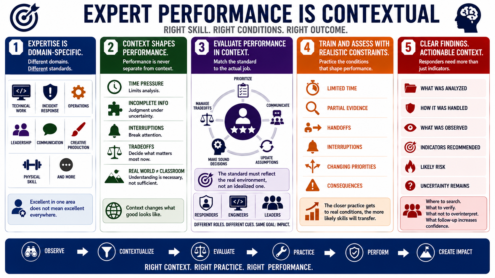

Performance Domains and Real-World Conditions
Connecting to LMS... Progress: in progress

Narration
Expert performance is domain-specific. The conditions that define strong performance in technical work are not identical to the conditions in operations, incident response, leadership, communication, creative production, or physical skill. Each domain has its own cues, constraints, risks, standards, and patterns of failure. A person can be excellent in one environment and still need practice, context, or support in another.
Real-world conditions matter because performance is never separate from context. Time pressure changes how much analysis is possible. Incomplete information forces judgment under uncertainty. Interruptions break attention. Tradeoffs require deciding what matters most right now. A clean classroom example may reveal understanding, but it does not fully prove performance in the environment where the skill will actually be used.
This is why performance should be evaluated in context. A strong incident responder needs to prioritize, communicate, and update assumptions during an active event. A strong engineer needs to make sound decisions within architecture, cost, maintainability, and risk constraints. A strong leader needs to create clarity when people are under pressure. The performance standard has to reflect the actual job, not an idealized version of it.
Training and assessment should therefore include realistic constraints. That does not mean every exercise must be high stakes. It means practice should gradually include the conditions that shape real performance: limited time, partial evidence, handoffs, interruptions, changing priorities, and consequences. The closer the practice gets to meaningful conditions, the more likely the skill will transfer back to the work.